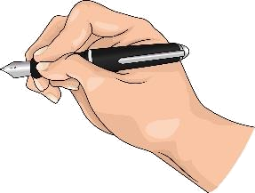

Man hört einen Ton und sieht gleichzeitig, dass das Wasser spritzt. Was passiert da?
Leitfrage 10
Wie entsteht Schall und wie kommt er zu uns?

Was vermutest du? Wir sammeln eure Vermutungen.
26. Wie entsteht Schall?
Schall entsteht, indem ein Medium (Gas, Flüssigkeit oder Festkörper)
an einer Stelle in Bewegung gebracht wird. Objekte, die Medien anregen, nennen wir
Schallquellen.
26. Wie entsteht Schall?
Schall entsteht, indem ein Medium (Gas, Flüssigkeit oder Festkörper)
an einer Stelle in Bewegung gebracht wird. Objekte, die Medien anregen, nennen wir
Schallquellen.
27. Die Schallwelle im Modell
In der Luft breitet sich Schall als Folge von Verdichtung und Verdünnung aus.
Die Schallgeschwindigkeit beträgt 343 m/s = 1235 km/h.
27. Die Schallwelle im Modell
In der Luft breitet sich Schall als Folge von Verdichtung und Verdünnung aus.
Die Schallgeschwindigkeit beträgt 343 m/s = 1235 km/h.
28. Schall braucht einen Stoff
Im Vakuum ist keine Schallausbreitung möglich. Ohne Teilchen gibt es
nichts, was verdichtet und verdünnt werden kann. Licht dagegen breitet sich auch im
Vakuum aus.
28. Schall braucht einen Stoff
Im Vakuum ist keine Schallausbreitung möglich. Ohne Teilchen gibt es
nichts, was verdichtet und verdünnt werden kann. Licht dagegen breitet sich auch im
Vakuum aus.
Antwort auf Leitfrage 10
Wie entsteht Schall und wie kommt er zu uns?
Eine Schallquelle versetzt ein Medium in Schwingung. Die Anregung läuft als
Folge von Verdichtungen und Verdünnungen weiter bis zum Empfänger,
zum Beispiel unserem Ohr. Ohne Medium, also im Vakuum, gibt es keinen Schall.
Check zu Leitfrage 10
1) Was passiert in der Luft, wenn sich Schall ausbreitet?
Die Luft strömt vom Sender zum Empfänger.
Die Luft wird abwechselnd verdichtet und verdünnt.
Die Luft erwärmt sich gleichmäßig.
Die Luft bleibt völlig unverändert.
2) Warum hört man im Weltraum keine Explosion?
Weil es dort zu kalt ist.
Weil der Schall zu schnell ist.
Weil im Vakuum keine Teilchen sind, die schwingen können.
Weil das Licht schneller ist als der Schall.
Lösung
1) b 2) c
Beobachte
Das Mikrofon macht den Ton auf dem Oszilloskop sichtbar. Was zeigt die Kurve?
Leitfrage 11
Warum klingt ein Ton laut oder leise, hoch oder tief?
Was vermutest du? Wir sammeln eure Vermutungen.
Versuch: Das Pendel
Aufbau
Beschreibung
Ein Pendel (Faden mit Kugel) wird ausgelenkt und dann losgelassen. Gemessen wird jeweils
die Zeit für 10 Schwingungen.
Die Auslenkung wird erhöht (gleiche Masse und Länge).
Die Masse wird erhöht (gleiche Auslenkung und Länge).
Die Länge wird vergrößert (gleiche Auslenkung und Masse).
Beobachtung
Ergebnis
Versuch: Das Pendel
Aufbau
Beschreibung
Ein Pendel (Faden mit Kugel) wird ausgelenkt und dann losgelassen. Gemessen wird jeweils
die Zeit für 10 Schwingungen.
Die Auslenkung wird erhöht (gleiche Masse und Länge).
Die Masse wird erhöht (gleiche Auslenkung und Länge).
Die Länge wird vergrößert (gleiche Auslenkung und Masse).
Beobachtung
Das Pendel führt wiederholt die gleiche Bewegung aus.
a) Die Auslenkung hat keinen Einfluss auf die Schwingungsdauer.
b) Die Masse hat keinen Einfluss auf die Schwingungsdauer.
c) Je größer die Pendellänge, desto größer die Schwingungsdauer.
Ergebnis
Eine Schwingung ist eine Bewegung, die sich regelmäßig wiederholt.
Bei diesem Pendel hängt die Schwingungsdauer nur von der Länge ab.
29. Die Größen einer Schwingung
Amplitude A: maximale Auslenkung.
Periode T: Dauer einer Schwingung.
Frequenz f: Anzahl der Schwingungen pro Sekunde.
29. Die Größen einer Schwingung
Amplitude A: maximale Auslenkung.
Periode T: Dauer einer Schwingung.
Frequenz f: Anzahl der Schwingungen pro Sekunde.
30. Ton, Klang, Geräusch und Knall
Ton: reine Sinusschwingung. Klang: mehrere Töne überlagert, Muster
wiederholt sich. Geräusch: kein wiederholendes Muster.
Knall: kurz, sehr große Amplitude.
30. Ton, Klang, Geräusch und Knall
Ton: reine Sinusschwingung. Klang: mehrere Töne überlagert, Muster
wiederholt sich. Geräusch: kein wiederholendes Muster.
Knall: kurz, sehr große Amplitude.
31. Laut und leise, hoch und tief
Die Amplitude bestimmt die Lautstärke, die
Frequenz die Tonhöhe. Große Amplitude heißt laut,
hohe Frequenz heißt hoher Ton.
31. Laut und leise, hoch und tief
Die Amplitude bestimmt die Lautstärke, die
Frequenz die Tonhöhe. Große Amplitude heißt laut,
hohe Frequenz heißt hoher Ton.
Versuch: Amplitude und Frequenz
Aufbau
Beschreibung
Eine Saite wird gespannt und angezupft. Was kann man sehen?
An der Saite wird stärker gezupft als zuvor.
Der Steg wird nach links verschoben und die Saite wieder angezupft.
Beobachtung
Ergebnis
Versuch: Amplitude und Frequenz
Aufbau
Beschreibung
Eine Saite wird gespannt und angezupft. Was kann man sehen?
An der Saite wird stärker gezupft als zuvor.
Der Steg wird nach links verschoben und die Saite wieder angezupft.
Beobachtung
a) Die Schwingung der Saite ist erkennbar.
b) Der Ton ist lauter.
c) Der Ton ist höher.
Ergebnis
Je größer die Amplitude der schwingenden Saite, desto lauter der Ton.
Je kürzer die schwingende Saite, desto höher die Frequenz und damit der Ton höher.
Antwort auf Leitfrage 11
Warum klingt ein Ton laut oder leise, hoch oder tief?
Beides liegt an der Schwingung der Schallquelle. Die Amplitude
ist ein Maß für die Lautstärke, die Frequenz ein Maß für die
Tonhöhe. An der Form der Kurve erkennt man außerdem, ob es ein Ton, ein Klang,
ein Geräusch oder ein Knall ist.
Check zu Leitfrage 11
1) Zwei Töne haben dieselbe Frequenz, aber verschiedene Amplitude. Was unterscheidet sie?
Die Tonhöhe
Die Lautstärke
Die Schallgeschwindigkeit
Nichts, sie klingen gleich.
2) Auf dem Oszilloskop ist ein wiederholendes, aber nicht sinusförmiges Muster zu sehen. Was ist das?
Ein reiner Ton
Ein Klang
Ein Geräusch
Ein Knall
Lösung
1) b 2) b
Beobachte
Musik über Kopfhörer, voll aufgedreht. Was macht das mit dem Ohr?
Leitfrage 12
Wie hören wir, und wann wird Schall gefährlich?
Was vermutest du? Wir sammeln eure Vermutungen.
32. Der Hörvorgang im Ohr
Die Schallwelle bringt das Trommelfell zum Schwingen. Über die
Gehörknöchelchen gelangt die Schwingung in die Gehörschnecke, wo Sinneszellen
sie in elektrische Signale umwandeln.
32. Der Hörvorgang im Ohr
Die Schallwelle bringt das Trommelfell zum Schwingen. Über die
Gehörknöchelchen gelangt die Schwingung in die Gehörschnecke, wo Sinneszellen
sie in elektrische Signale umwandeln.
33. Wann wird Schall gefährlich?
Ab etwa 85 dB kann dauerhafter Lärm das Gehör schädigen. Die
Sinneszellen in der Schnecke wachsen nicht nach. Schutz: Abstand, Pausen,
Gehörschutz, Lautstärke begrenzen.
33. Wann wird Schall gefährlich?
Ab etwa 85 dB kann dauerhafter Lärm das Gehör schädigen. Die
Sinneszellen in der Schnecke wachsen nicht nach. Schutz: Abstand, Pausen,
Gehörschutz, Lautstärke begrenzen.
Antwort auf Leitfrage 12
Wie hören wir, und wann wird Schall gefährlich?
Der Schall bringt das Trommelfell zum Schwingen, die Gehörknöchelchen leiten die Schwingung
weiter, und in der Gehörschnecke entstehen elektrische Signale für das Gehirn. Weil die
Sinneszellen nicht nachwachsen, ist zu lauter Schall dauerhaft
schädlich, ab etwa 85 dB.
Check zu Leitfrage 12
1) Was gerät als Erstes in Schwingung, wenn Schall ins Ohr gelangt?
Die Gehörschnecke
Das Trommelfell
Der Hörnerv
Die Gehörknöchelchen
2) Warum ist eine Hörschädigung meist dauerhaft?
Weil das Trommelfell reißt.
Weil die Gehörknöchelchen verrutschen.
Weil die Sinneszellen nicht nachwachsen.
Weil sich der Gehörgang verengt.
Lösung
1) b 2) c
Unsere Fragen in der Akustik
F10 Wie entsteht Schall und wie kommt er zu uns?
F11 Warum klingt ein Ton laut oder leise, hoch oder tief?
F12 Wie hören wir, und wann wird Schall gefährlich?
Ein Satz verbindet alles:
Schall ist eine Schwingung, die sich durch einen Stoff ausbreitet.
Ihre Amplitude hören wir als Lautstärke, ihre Frequenz als Tonhöhe.
Zum Schluss: Wie weit ist das Gewitter?
Licht ist fast eine Million Mal schneller als Schall. Deshalb sehen wir den Blitz sofort
und hören den Donner erst später.